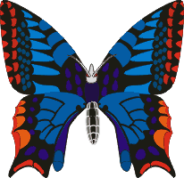

Up to Index.
Up to Index.
Butterflies are delicate and beautiful creatures, but they don't begin life looking this way. They start out as caterpillars, crawling on the ground and in trees, eating leaves and plants. Soon, they build cocoons around themselves, and go through a metamorphosis. When they emerge, we see the pretty flying insects with delicate and colorful wings that we are so fond of.